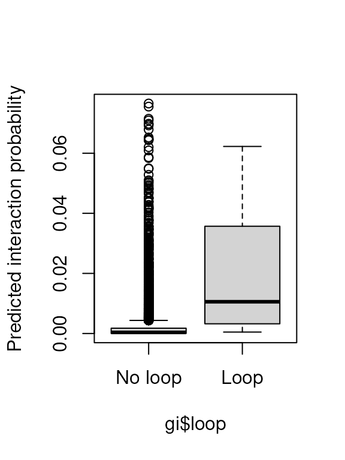

vignettes/sevenC.Rmd
sevenC.RmdAbstract
Chromatin looping is an essential feature of eukaryotic genomes and can bring regulatory sequences, such as enhancers or transcription factor binding sites, in the close physical proximity of regulated target genes. Here, we provide sevenC, an R package that uses protein binding signals from ChIP-seq and sequence motif information to predict chromatin looping events. Cross-linking of proteins that bind close to loop anchors result in ChIP-seq signals at both anchor loci. These signals are used at CTCF motif pairs together with their distance and orientation to each other to predict whether they interact or not. The resulting chromatin loops might be used to associate enhancers or transcription factor binding sites (e.g., ChIP-seq peaks) to regulated target genes.Gene expression is regulated by binding of transcription factors (TF) to genomic DNA. However, many binding sites are in distal regulatory regions, such as enhancers, that are hundreds of kilobases apart from genes. These regulatory regions can physically interact with promoters of regulated genes by chromatin looping interactions. These looping interaction can be measured genome-wide by chromatin conformation capture techniques such as Hi-C or ChIA-PET (Rao et al. 2014; Tang et al. 2015). Despite many exciting insights into the three-dimensional organization of genomes, these experimental methods are not only elaborate and expansive but also have limited resolution and are only available for a limited number of cell types and conditions. In contrast, the binding sites of TFs can be detected genome-wide by ChIP-seq experiment with high resolution and are available for hundreds of TFs in many cell type and conditions. However, classical analysis of ChIP-seq gives only the direct binding sites of targeted TFs (ChIP-seq peaks) and it is not trivial to associate them to the regulated gene without chromatin looping information. Therefore, we provide a computational method to predict chromatin interactions from only genomic sequence features and ChIP-seq data. The predicted looping interactions can be used to associate TF binding sites (ChIP-seq peaks) or enhancers to regulated genes and thereby improve functional downstream analysis on the level of genes.
In this vignette, we show how to use the R package sevenC to predict chromatin looping interactions between CTCF motifs by using only ChIP-seq data form a single experiment. Furthermore, we show how to train the prediction model using custom data.
A more detailed explanation of the sevenC method together with prediction performance analysis is available in the associated preprint (Ibn-Salem and Andrade-Navarro 2018).
Here we show how to use the sevenC package with default options to predict chromatin looping interactions among CTCF motif locations on the human chromosome 22. As input, we only use CTCF motif locations and a single bigWig file from a STAT1 ChIP-seq experiment in human GM12878 cells (Dunham et al. 2012).
Here we show in more detail each step of the loop prediction process. Again, we want to predict chromatin looping interactions among CTCF motif locations on chromosome 22 using a ChIP-seq for STAT1 in human GM12878 cells.
First, we need to prepare CTCF motif pairs as candidate anchors for chromatin loop interactions. We use CTCF motif hits in human chromosome 22 as provide by sevenC package. In general, any CTCF motifs can be used if provided as GRanges. To use the motif similarity score as a predictive feature, the motif data should contain -log10 transformed p-values describing the significance of each motif hit. Here, we use CTCF motif sites as provided from the JASPAR genome browser tracks (Khan et al. 2018). The objedt motif.hg19.CTCF.chr22 in the r BiocStyle::Biocpkg("sevenC") package contains CTCF motif locations on chromosome 22. For more information on the motif data set, see ?motif.hg19.CTCF.
The CTCF motif are represented as GRanges object from the r BiocStyle::Biocpkg("GenomicRanges") package. There are 917 CTCF motif locations on chromosome 22. The genome assembly is hg19. one metadata column named score shows motif match similarity as -log10 transformed p-value.
To predict loops, we need the ChIP-seq signals at all motif sites. Therefore, we read an example bigWig file with ChIP-seq signals.
An example file with only data on a subset of chromosome 22 is provided as part of the sevenC package. The full file can be downloaded from ENCODE (Dunham et al. 2012) here. The file contains for each position in the genome the log-fold-change of ChIP-seq signals versus input control.
# use example ChIP-seq bigWig file
bigWigFile <- system.file("extdata", "GM12878_Stat1.chr22_1-30000000.bigWig",
package = "sevenC")We add ChIP-seq signals to all motifs in a window of 1000 bp using the function addCovToGR() as follows.
This adds a new metadata column to motifs holding a NumericList with ChIP-seq signals for each motif location.
## NumericList of length 917
## [["chr22"]] 0 0 0 0 0 0 0 0 0 0 0 0 0 0 0 ... 1 1 1 1 1 1 1 1 1 1 1 1 1 1
## [["chr22"]] 1 1 1 1 1 0 0 0 0 0 0 0 0 0 0 ... 2 2 2 2 2 2 2 2 2 2 2 2 2 2
## [["chr22"]] 0 0 0 0 0 0 0 0 0 0 0 0 0 0 0 ... 0 0 0 0 0 0 0 0 0 0 0 0 0 0
## [["chr22"]] 0 0 0 0 0 0 0 0 0 0 0 0 0 0 0 ... 1 1 1 1 1 1 1 1 1 1 1 1 1 1
## [["chr22"]] 0 0 0 0 0 0 0 0 0 0 0 0 0 0 0 ... 0 0 0 0 0 0 0 0 0 0 0 0 0 0
## [["chr22"]] 0 0 0 0 0 0 0 0 0 0 0 0 0 0 0 ... 0 0 0 0 0 0 0 0 0 0 0 0 0 0
## [["chr22"]] 0 0 0 0 0 0 0 0 0 0 0 0 0 0 0 ... 0 0 0 0 0 0 0 0 0 0 0 0 0 0
## [["chr22"]] 0 0 0 0 0 0 0 0 0 0 0 0 0 0 0 ... 0 0 0 0 0 0 0 0 0 0 0 0 0 0
## [["chr22"]] 0 0 0 0 0 0 0 0 0 0 0 0 0 0 0 ... 0 0 0 0 0 0 0 0 0 0 0 0 0 0
## [["chr22"]] 1 1 1 1 1 1 1 1 1 1 1 1 1 1 1 ... 2 2 2 2 2 2 2 2 2 2 2 2 2 2
## ...
## <907 more elements>Please note, on Windows systems, reading of bigWig files is currently not supported. See help(rtracklayer::import.bw) for more information. Users on Windows need to get ChIP-seq signals around motif sites as a NumierList object. A NumericList l with ChIP-signal counts around each motif list can be added by motifs$chip <- l.
Now we build a dataset with all pairs of CTCF motif within 1 Mb and annotate it with distance, motif orientation, and motif score.
## StrictGInteractions object with 26076 interactions and 5 metadata columns:
## seqnames1 ranges1 seqnames2 ranges2 |
## <Rle> <IRanges> <Rle> <IRanges> |
## [1] chr22 16186188-16186206 --- chr22 16205307-16205325 |
## [2] chr22 16186188-16186206 --- chr22 16238548-16238566 |
## [3] chr22 16186188-16186206 --- chr22 16239188-16239206 |
## [4] chr22 16186188-16186206 --- chr22 16239827-16239845 |
## [5] chr22 16186188-16186206 --- chr22 16247246-16247264 |
## ... ... ... ... ... ... .
## [26072] chr22 51110780-51110798 --- chr22 51160028-51160046 |
## [26073] chr22 51110780-51110798 --- chr22 51172084-51172102 |
## [26074] chr22 51130130-51130148 --- chr22 51160028-51160046 |
## [26075] chr22 51130130-51130148 --- chr22 51172084-51172102 |
## [26076] chr22 51160028-51160046 --- chr22 51172084-51172102 |
## dist strandOrientation score_1 score_2 score_min
## <integer> <character> <numeric> <numeric> <numeric>
## [1] 19119 forward 6.05 5.72 5.72
## [2] 52360 forward 6.05 5.92 5.92
## [3] 53000 forward 6.05 5.9 5.9
## [4] 53639 forward 6.05 5.92 5.92
## [5] 61058 forward 6.05 5.92 5.92
## ... ... ... ... ... ...
## [26072] 49248 reverse 6.21 5.64 5.64
## [26073] 61304 reverse 6.21 5.9 5.9
## [26074] 29898 reverse 6.33 5.64 5.64
## [26075] 41954 reverse 6.33 5.9 5.9
## [26076] 12056 reverse 5.64 5.9 5.64
## -------
## regions: 917 ranges and 2 metadata columns
## seqinfo: 93 sequences (1 circular) from hg19 genomeThe function prepareCisPairs() returns a GInteractoin object from the r BiocStyle::Biocpkg("InteractonSet") package, representing all motif pairs within the defined distance. The metadata columns of the GInteractoin object hold the genomic distance between motifs in bp (dist), the orientation of motifs (strandOrientation), and the motif score as -log10 of the motif hit p-value (score_1, score_2, and score_min). Note, that the function prepareCisPairs() is a wrapper for three individual functions that perform each step separately and allow more options. First, getCisPairs() is used to builds the GInteractoin object. Than addStrandCombination() adds the four possible strand combinations of motifs pairs. Finally, addMotifScore() adds the minimum motif score for each pair. These genomic features are used later as predictive variables.
Now, we compute the similarity of ChIP-seq signals for all motif pairs as the correlation of signals across positions around motif centers. Thereby, for two motifs the corresponding ChIP-seq signal vectors that were added to motifs before, are compared by Pearson correlation. A high correlation of ChIP-seq signals at two motifs indicates a similar ChIP-seq coverage profile at the two motifs. This, in turn, is characteristic for physical interaction via chromatin looping, where ChIP signals are found on both sides with a similar distance to motif centers (Ibn-Salem and Andrade-Navarro 2018). The correlation coefficient is added as additional metadata column to gi.
Now we can predict chromatin loops integrating from the ChIP-seq correlation and other genomic features in a logistic regression model. This is implemented in the predLoops() function.
## StrictGInteractions object with 607 interactions and 7 metadata columns:
## seqnames1 ranges1 seqnames2 ranges2 |
## <Rle> <IRanges> <Rle> <IRanges> |
## [1] chr22 16186188-16186206 --- chr22 16239188-16239206 |
## [2] chr22 16205307-16205325 --- chr22 16409786-16409804 |
## [3] chr22 16238548-16238566 --- chr22 16409786-16409804 |
## [4] chr22 17398482-17398500 --- chr22 17539262-17539280 |
## [5] chr22 17398482-17398500 --- chr22 17652850-17652868 |
## ... ... ... ... ... ... .
## [603] chr22 26756542-26756560 --- chr22 27041422-27041440 |
## [604] chr22 26763796-26763814 --- chr22 27041422-27041440 |
## [605] chr22 28123236-28123254 --- chr22 28221328-28221346 |
## [606] chr22 29225543-29225561 --- chr22 29436847-29436865 |
## [607] chr22 29436847-29436865 --- chr22 29641698-29641716 |
## dist strandOrientation score_1 score_2 score_min
## <integer> <character> <numeric> <numeric> <numeric>
## [1] 53000 forward 6.05 5.9 5.9
## [2] 204479 convergent 5.72 5.79 5.72
## [3] 171238 convergent 5.92 5.79 5.79
## [4] 140780 convergent 6.48 6.89 6.48
## [5] 254368 convergent 6.48 8.49 6.48
## ... ... ... ... ... ...
## [603] 284880 reverse 8.27 7.93 7.93
## [604] 277626 reverse 8.59 7.93 7.93
## [605] 98092 reverse 6.29 8.16 6.29
## [606] 211304 reverse 6.73 6.33 6.33
## [607] 204851 reverse 6.33 7.27 6.33
## cor_chip pred
## <numeric> <numeric>
## [1] 0.885072700379391 0.193088582740316
## [2] 0.415730555504532 0.16264353243483
## [3] 0.675 0.301511861680806
## [4] 0.790283850445726 0.550518859830263
## [5] 0.221485126152438 0.172598431306202
## ... ... ...
## [603] 0.349559060111433 0.225007521722854
## [604] 0.739379609297975 0.423643299218372
## [605] 0.601548182884723 0.188784650506129
## [606] 0.928965197273641 0.245978189154254
## [607] 0.909619042677005 0.242532301825788
## -------
## regions: 917 ranges and 2 metadata columns
## seqinfo: 93 sequences (1 circular) from hg19 genomeThe predLoops() function returns a subset of motif pairs that are predicted to interact. The interactions are annotated with ChIP-seq correlation in column cor_chip. The column pred holds the predicted interaction probability according to the logistic regression model.
Note, that without specifying further options, the function predLoops() uses a default model that was optimized for several transcription factor ChIP-seq datasets by using experimental chromatin loops from Hi-C and ChIA-PET for validations (Ibn-Salem and Andrade-Navarro 2018). However, users can specify custom features using the formula argument and provide custom parameters using the betas argument. Furthermore, per default the predLoops() function report only looping interactions that reach a minimal prediction score threshold. The fraction of reported loops can be modified using the cutoff argument.
Predicted loops are represented as GInteraction and can, therefore, be used easily for downstream analysis with functions from the r BiocStyle::Biocpkg("InteractonSet") package. For example, linking two sets of regions (like ChIP-seq peaks and genes) can be done using the linkOverlaps function. See the vignette from the InteractonSet package for more details and examples on working with GInteraction objects.
Since looping interactions are stored as GInteraction objects, they can be exported as BEDPE files using functions from GenomicInteractions package. These files can be used for visualization in genome browsers or the Juicebox tool.
Here, we show how to use sevenC to build and train a logistic regression model for loop prediction.
First, we need to build the pairs of motifs as candidates and add the ChIP-seq data as shown above.
# load provided CTCF motifs
motifs <- motif.hg19.CTCF.chr22
# use example ChIP-seq coverage file
bigWigFile <- system.file("extdata", "GM12878_Stat1.chr22_1-30000000.bigWig",
package = "sevenC")
# add ChIP-seq coverage
motifs <- addCovToGR(motifs, bigWigFile)
# build motif pairs
gi <- prepareCisPairs(motifs, maxDist = 10^6)
# add correaltion of ChIP-signal
gi <- addCovCor(gi)We need to label true looping interactions by using experimental data of chromatin interactions. Here, we use loops from high-resolution Hi-C experiments in human GM12878 cells (Rao et al. 2014). An example file with loops on chromosome 22 is provided with the sevenC package and the function parseLoopsRao() reads loops in the format provided by Rao et al. and returns a GInteraction object.
# parse known loops
knownLoopFile <- system.file("extdata",
"GM12878_HiCCUPS.chr22_1-30000000.loop.txt", package = "sevenC")
knownLoops <- parseLoopsRao(knownLoopFile)We can add a new metadata column to the motif pairs gi, indicating whether the pair is interacting in the experimental data using the function addInteractionSupport().
The experimental support is added as factor with levels "Loop" and "No loop" as metadata column named loop. The column name can be modified using the colname argument.
We can use the R function glm() to fit a logistic regression model in which the loop column is the dependent variable and the ChIP-seq correlation, distance, and strand orientation are the predictors.
Now, we can use this model to add predicted looping probabilities.
# add predict loops
gi <- predLoops(
gi,
formula = loop ~ cor_chip + dist + strandOrientation,
betas = coef(fit),
cutoff = NULL
)Here, we have to use the same formula as argument as in the model fitting step above. The betas argument takes the coefficients of the logistic regression model. Finally, the argument cutoff = NULL ensures that no filtering is done and all input candidates are reported. The prediction score is added as a new metadata column to gi.
## StrictGInteractions object with 26076 interactions and 8 metadata columns:
## seqnames1 ranges1 seqnames2 ranges2 |
## <Rle> <IRanges> <Rle> <IRanges> |
## [1] chr22 16186188-16186206 --- chr22 16205307-16205325 |
## [2] chr22 16186188-16186206 --- chr22 16238548-16238566 |
## [3] chr22 16186188-16186206 --- chr22 16239188-16239206 |
## [4] chr22 16186188-16186206 --- chr22 16239827-16239845 |
## [5] chr22 16186188-16186206 --- chr22 16247246-16247264 |
## ... ... ... ... ... ... .
## [26072] chr22 51110780-51110798 --- chr22 51160028-51160046 |
## [26073] chr22 51110780-51110798 --- chr22 51172084-51172102 |
## [26074] chr22 51130130-51130148 --- chr22 51160028-51160046 |
## [26075] chr22 51130130-51130148 --- chr22 51172084-51172102 |
## [26076] chr22 51160028-51160046 --- chr22 51172084-51172102 |
## dist strandOrientation score_1 score_2 score_min
## <integer> <character> <numeric> <numeric> <numeric>
## [1] 19119 forward 6.05 5.72 5.72
## [2] 52360 forward 6.05 5.92 5.92
## [3] 53000 forward 6.05 5.9 5.9
## [4] 53639 forward 6.05 5.92 5.92
## [5] 61058 forward 6.05 5.92 5.92
## ... ... ... ... ... ...
## [26072] 49248 reverse 6.21 5.64 5.64
## [26073] 61304 reverse 6.21 5.9 5.9
## [26074] 29898 reverse 6.33 5.64 5.64
## [26075] 41954 reverse 6.33 5.9 5.9
## [26076] 12056 reverse 5.64 5.9 5.64
## cor_chip loop pred
## <numeric> <factor> <numeric>
## [1] 0.339540495724593 No loop 0.00207736832933179
## [2] -0.104691613939358 No loop 0.000422511191326569
## [3] 0.885072700379391 No loop 0.0122895154866494
## [4] -0.170960689666582 No loop 0.000335909138644671
## [5] -0.104691613939358 No loop 0.000414237393073598
## ... ... ... ...
## [26072] <NA> No loop <NA>
## [26073] <NA> No loop <NA>
## [26074] <NA> No loop <NA>
## [26075] <NA> No loop <NA>
## [26076] <NA> No loop <NA>
## -------
## regions: 917 ranges and 2 metadata columns
## seqinfo: 93 sequences (1 circular) from hg19 genomeAs a very simple validation, we can now compare the prediction score for looping and non-looping motif pairs using a boxplot.

The plot shows higher prediction scores for truly looping motif pairs. However, this is an insufficient evaluation of prediction performance, since the prediction score is evaluated on the same data as it was trained. A more detailed evaluation of prediction performance using cross-validation and different cell types is described in the 7C paper (Ibn-Salem and Andrade-Navarro 2018).
## R version 3.5.1 (2018-07-02)
## Platform: x86_64-pc-linux-gnu (64-bit)
## Running under: Ubuntu 16.04.5 LTS
##
## Matrix products: default
## BLAS: /home/ibnsalem/bin/R-3.5.1/lib64/R/lib/libRblas.so
## LAPACK: /home/ibnsalem/bin/R-3.5.1/lib64/R/lib/libRlapack.so
##
## locale:
## [1] LC_CTYPE=de_DE.UTF-8 LC_NUMERIC=C
## [3] LC_TIME=de_DE.UTF-8 LC_COLLATE=de_DE.UTF-8
## [5] LC_MONETARY=de_DE.UTF-8 LC_MESSAGES=de_DE.UTF-8
## [7] LC_PAPER=de_DE.UTF-8 LC_NAME=C
## [9] LC_ADDRESS=C LC_TELEPHONE=C
## [11] LC_MEASUREMENT=de_DE.UTF-8 LC_IDENTIFICATION=C
##
## attached base packages:
## [1] parallel stats4 stats graphics grDevices utils datasets
## [8] methods base
##
## other attached packages:
## [1] GenomicInteractions_1.14.0 sevenC_1.0.0
## [3] InteractionSet_1.8.0 SummarizedExperiment_1.10.1
## [5] DelayedArray_0.6.5 BiocParallel_1.14.2
## [7] matrixStats_0.54.0 Biobase_2.40.0
## [9] GenomicRanges_1.32.6 GenomeInfoDb_1.16.0
## [11] IRanges_2.14.11 S4Vectors_0.18.3
## [13] BiocGenerics_0.26.0 BiocStyle_2.8.2
##
## loaded via a namespace (and not attached):
## [1] colorspace_1.3-2 rprojroot_1.3-2
## [3] biovizBase_1.28.2 htmlTable_1.12
## [5] XVector_0.20.0 base64enc_0.1-3
## [7] fs_1.2.6 dichromat_2.0-0
## [9] rstudioapi_0.7 roxygen2_6.1.0
## [11] bit64_0.9-7 AnnotationDbi_1.42.1
## [13] xml2_1.2.0 splines_3.5.1
## [15] knitr_1.20 Formula_1.2-3
## [17] Rsamtools_1.32.3 cluster_2.0.7-1
## [19] readr_1.1.1 compiler_3.5.1
## [21] httr_1.3.1 backports_1.1.2
## [23] assertthat_0.2.0 Matrix_1.2-14
## [25] lazyeval_0.2.1 acepack_1.4.1
## [27] htmltools_0.3.6 prettyunits_1.0.2
## [29] tools_3.5.1 bindrcpp_0.2.2
## [31] igraph_1.2.2 gtable_0.2.0
## [33] glue_1.3.0 GenomeInfoDbData_1.1.0
## [35] dplyr_0.7.6 Rcpp_0.12.18
## [37] pkgdown_1.1.0 Biostrings_2.48.0
## [39] rtracklayer_1.40.6 xfun_0.3
## [41] stringr_1.3.1 ensembldb_2.4.1
## [43] XML_3.98-1.16 zlibbioc_1.26.0
## [45] MASS_7.3-50 scales_1.0.0
## [47] BSgenome_1.48.0 VariantAnnotation_1.26.1
## [49] hms_0.4.2 ProtGenerics_1.12.0
## [51] AnnotationFilter_1.4.0 RColorBrewer_1.1-2
## [53] yaml_2.2.0 curl_3.2
## [55] memoise_1.1.0 gridExtra_2.3
## [57] ggplot2_3.0.0 biomaRt_2.36.1
## [59] rpart_4.1-13 latticeExtra_0.6-28
## [61] stringi_1.2.4 RSQLite_2.1.1
## [63] desc_1.2.0 checkmate_1.8.5
## [65] GenomicFeatures_1.32.2 boot_1.3-20
## [67] rlang_0.2.2 pkgconfig_2.0.2
## [69] commonmark_1.5 bitops_1.0-6
## [71] evaluate_0.11 lattice_0.20-35
## [73] purrr_0.2.5 bindr_0.1.1
## [75] GenomicAlignments_1.16.0 htmlwidgets_1.2
## [77] bit_1.1-14 tidyselect_0.2.4
## [79] plyr_1.8.4 magrittr_1.5
## [81] bookdown_0.7 R6_2.2.2
## [83] Hmisc_4.1-1 DBI_1.0.0
## [85] pillar_1.3.0 foreign_0.8-71
## [87] survival_2.42-6 RCurl_1.95-4.11
## [89] nnet_7.3-12 tibble_1.4.2
## [91] crayon_1.3.4 rmarkdown_1.10
## [93] progress_1.2.0 grid_3.5.1
## [95] data.table_1.11.4 blob_1.1.1
## [97] digest_0.6.16 munsell_0.5.0
## [99] Gviz_1.24.0Dunham, Ian, Anshul Kundaje, Shelley F Aldred, Patrick J Collins, Carrie a Davis, Francis Doyle, Charles B Epstein, et al. 2012. “An integrated encyclopedia of DNA elements in the human genome.” Nature 489 (7414):57–74. https://doi.org/10.1038/nature11247.
Ibn-Salem, Jonas, and Miguel A. Andrade-Navarro. 2018. “Computational Chromosome Conformation Capture by Correlation of ChIP-seq at CTCF motifs.” bioRxiv, February. Cold Spring Harbor Laboratory, 257584. https://doi.org/10.1101/257584.
Khan, Aziz, Oriol Fornes, Arnaud Stigliani, Marius Gheorghe, Jaime A Castro-Mondragon, Robin van der Lee, Adrien Bessy, et al. 2018. “JASPAR 2018: update of the open-access database of transcription factor binding profiles and its web framework.” Nucleic Acids Research 46 (D1):D260–D266. https://doi.org/10.1093/nar/gkx1126.
Rao, Suhas S P, Miriam H Huntley, Neva C Durand, Elena K Stamenova, Ivan D Bochkov, James T Robinson, Adrian L Sanborn, et al. 2014. “A 3D map of the human genome at kilobase resolution reveals principles of chromatin looping.” Cell 159 (7). Elsevier Inc.:1665–80. https://doi.org/10.1016/j.cell.2014.11.021.
Tang, Zhonghui, Oscar Junhong Luo, Xingwang Li, Meizhen Zheng, Jacqueline Jufen Zhu, Przemyslaw Szalaj, Pawel Trzaskoma, et al. 2015. “CTCF-Mediated Human 3D Genome Architecture Reveals Chromatin Topology for Transcription.” Cell. Elsevier Inc., 1–17. https://doi.org/10.1016/j.cell.2015.11.024.